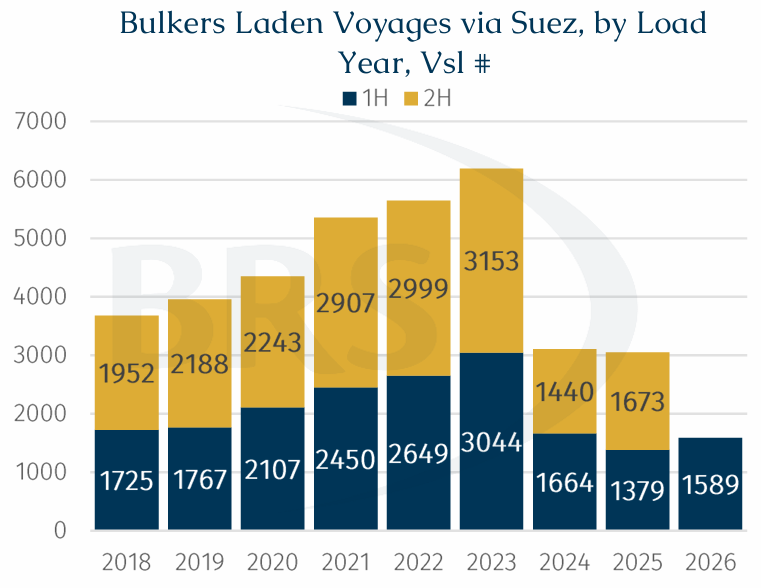
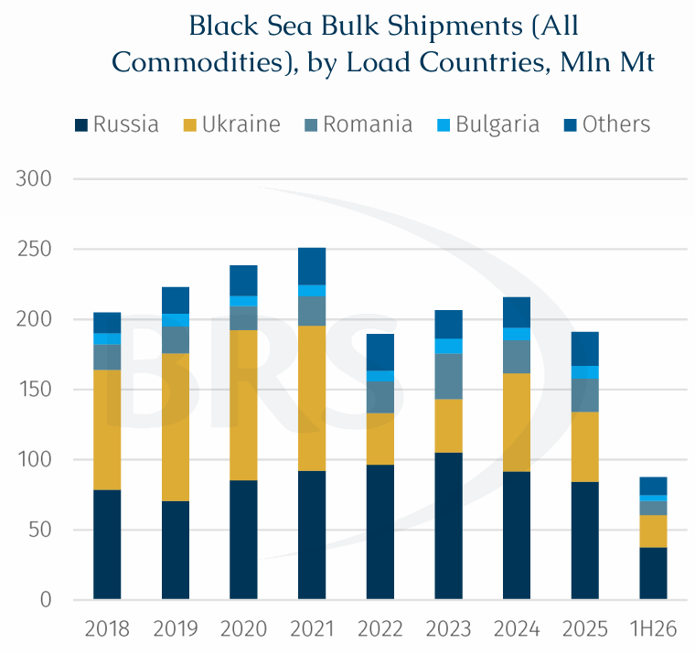
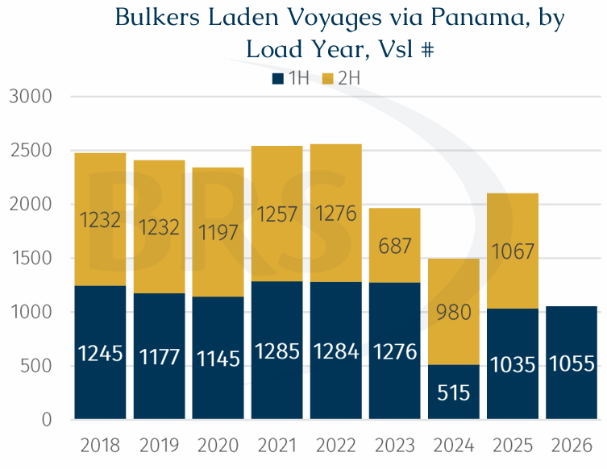

Recent developments in the Black Sea, the Strait of Hormuz and the Red Sea are a stark reminder that maritime trade does not evolve in a linear or predictable fashion. Routes that appear to be normalising can quickly face renewed security risks, forcing commercial assumptions to be revised.
Against this backdrop, a year-to-date review of the major maritime chokepoints offers a useful snapshot of the operating landscape for dry bulk participants.
Suez Canal and Red Sea: Fragile Confidence Tested Again
Although dry bulk traffic through the Suez Canal has slightly recovered from its depressed levels recorded in 2025 as AXSMarine data indicate that about 1,600 laden bulker transits were recorded in 1H26 (up 15% y-o-y), traffic remained well below pre-crisis levels.

The latest escalation began on 20 July, when Yemen's Houthis declared a maritime embargo against Saudi Arabia and warned ships against using Saudi ports. The threat is relevant to dry bulk, particularly geared vessels lifting phosphate, fertiliser and other cargoes from Saudi terminals, which could face higher insurance costs and reduced owner participation. This is relevant because Saudi Red Sea terminals, including Yanbu, had provided an alternative outlet for some cargoes previously shipped from Ras Al Khair.
Another indirect consequence for dry bulk is the renewed uncertainty and volatility on bunker prices as concurrent attacks around Hormuz and Red Sea traffic raise concerns over crude supply and logistics.
The wider risk extends beyond shipping costs. Sustained high energy prices raise manufacturing, transport and agricultural costs, complicate the inflation outlook and constrain household and industrial demand. Although the world economy has so far absorbed the initial energy shock better than initially expected a renewed or prolonged increase in oil prices could weaken economic prospects into 2H26 and beyond. The key question is whether the latest Red Sea attack marks the start of sustained enforcement of the Houthi threat; that will determine the durability of the oil-price and freight response to fleet speed.
Bosphorus and Black Sea: Gateway Open, Regional Risk Repriced
The Bosphorus has continued to operate, and the latest increase in Turkish Straits transit fees affects voyage cost rather than physical capacity. Effective 1 July 2026, the fee for vessels passing through the Bosphorus and Dardanelles without calling at a Turkish port rose by about 15%, from $5.83 to $6.70 per net ton. The more serious disruption lies farther north in the Black Sea and Sea of Azov.

Commercial access to the Sea of Azov was restricted in July following intensified attacks on vessels and maritime infrastructure. Around one-quarter of Russia's grain exports normally moves through Azov ports, and cargoes may need to be redirected towards deeper Black Sea or Baltic terminals. Such rerouting would complicate inland transport, delay shipments and alter vessel requirements.
Ukraine's Black Sea ports have also suffered repeated attacks. Some owners reportedly cancelled fixtures or declined port calls, while concerns grew over the availability and cost of war-risk cover. Traders suspended some purchases; flows may be redirected through the Danube and Romania's Constanta, or replaced by other European origins.
The impact is most direct for Black Sea wheat, barley and corn exports in 2H26, typically the busier half of the calendar year. Russia and Ukraine together account for a major share of global wheat trade, so sustained disruption would have consequences beyond the region. Russian July wheat-export estimates were reduced, while Black Sea and European wheat prices rose as traders anticipated tighter logistics and possible shifts in purchasing patterns.
For dry bulk grain shipments, the result is two-sided. Potentially lower export availability in 2H26 would reduce vessel demand in the region. At the same time, Handysize and Supramax vessels may benefit from smaller parcels and alternative terminals, although these routes cannot fully replace deep-water Black Sea capacity. If Mediterranean and MENA buyers replace Black Sea cargoes with more distant origins, tonne-mile demand could rise.
On 28 July, Ferrexpo formally confirmed that a vessel carrying approximately 55,000 mt of its DR-grade pellets had been struck by Russian drones while sailing in Ukrainian Black Sea waters, resulting in the death of a crew member and damage to both the vessel and cargo. Following the attack and subsequent fixture cancellations, Ferrexpo expects no further shipments through this route for the foreseeable future. AXSMarine-tracked Ukrainian seaborne iron-ore shipments, predominantly carried on Capesize vessels, had already fallen by approximately 49.7% in 1H26, to 4.36 mln mt from 8.67 mln mt in 1H25. The direct effect is negative for Capesize cargo availability from Ukraine, although Chinese buyers may partly replace these volumes with longer-haul pellets or high-grade ore from Brazil, Canada or Sweden, potentially recovering some lost tonne-mile demand.
Strait of Hormuz: Most Direct Dry bulkDisruption
Hormuz has generated the clearest direct disruption to dry bulk shipping in 2026. During the most severe phase, traffic through the strait fell sharply and large numbers of bulk carriers were stranded inside the Middle East Gulf. Subcape vessels were particularly impacted because of their exposure to Gulf imports and exports.
Fertilisers and sulphur experienced the most visible cargo impact. The Gulf accounts for a substantial share of global fertiliser exports, and shipments declined sharply as production, terminal operations and vessel access were interrupted. Sulphur was especially affected because much of its output is linked to oil and gas processing. A prolonged disruption could raise the cost and complicate the timing of crop nutrients ahead of Northern Hemisphere winter wheat and Southern Hemisphere soybean planting windows from September onwards.
Prior to the renewed attacks, the late-June resumption of vessel movements did not signal a full trade recovery. Many early departures involved bulkers clearing accumulated backlogs rather than new cargo requirements, while fresh loadings remained constrained. Hence, the lesson is that real-time transit data alone can therefore overstate the pace of normalisation.
Coal experienced a different effect. Lower LNG availability encouraged additional coal purchases in parts of Asia and Europe, supporting Panamax and Capesize employment. However, the medium-term substitution benefit is likely to be finite: a prolonged energy shock could weaken industrial activity and broader dry bulk demand.
Adding further complexity to risk management, it was reported last week that the Lloyd’s insurance market had drafted a new clause for possible inclusion in hull policies. Under the proposed wording, insurance cover could be cancelled for any individual vessel that pays a toll or fee to Iranian - or potentially Omani - authorities to transit the Strait of Hormuz, rather than applying to the shipowner’s entire fleet.
Panama Canal: El Nino Finally Flexing its Muscle
The Panama Canal entered 2026 in a stronger position than during the drought restrictions of earlier years. Daily transit capacity remained broadly stable, but April demonstrated that normal operating capacity does not guarantee easy or economical access for dry bulk vessels. Lock maintenance coincided with strong reservation demand and competition from higher-value ships, contributing to lengthy waits for unbooked bulkers and expensive auction slots in 2Q26.
According to an official advisory, the Panama Canal Authority (ACP) stated that the average slot-auction price had risen from a pre-conflict range of $135,000-$140,000 to approximately $385,000 between March and April. Separate market data recorded exceptional individual Panamax and Neopanamax bids well above that level.

In the coming months, attention is likely to shift from congestion to loadability and last-minute booking flexibility. Citing current hydrological conditions and the potential development of El Niño, the ACP announced progressive cuts to the maximum Neopanamax draught, to 14.94 metres from 24 July and 14.78 metres from 15 August. From 25 July, ACP will also temporarily suspend Period 3 auctions for the Regular and Super segments, affecting only two of the canal's 36 daily slots; Neopanamax Period 3 and extraordinary auctions will remain available. These targeted measures follow Middle East disruption that tightened reservation demand and produced exceptional multimillion-dollar auction bids from ships transporting energy.
The main dry bulk exposure is to US Gulf and Atlantic-basin agricultural cargoes moving towards Asia. The Panama Canal should therefore be viewed primarily as a source of voyage inefficiency (continued use of Cape of Good Hope) and scheduling risk rather than a broad capacity crisis.